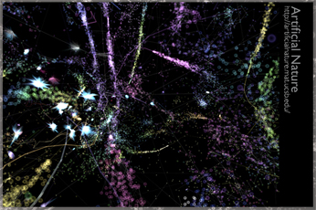

Current Projects
testArtificial Nature 2007~Current
|  | |
| AN Website AN Postcard | |
 |
|
| 2. Intensive Science & Virtual Philosophy (Continuum Impacts) by Manuel De Landa | |
News
EvoStar 2009:
Paper: "Artificial Nature; Immersive World Making"
April 15-17, 2009
Tübingen, Germany
Graham Wakefield, Haru Ji
EvoMUSART 2009 is the seventh workshop of the EvoNet working group on Evolutionary Music and Art. Following the success of previous events and the growth of interest in the field, the main goal of EvoMUSART 2009 is to bring together researchers who are using biologically inspired techniques for artistic tasks, providing the opportunity to promote, present and discuss ongoing work in this area.
EvoMUSART EvoStar 2009The Future of Interactive Media 2009:
Paper + Installation: "Artificial Nature"
: As an Infinite Game
: In the Allosphere
January 29, 3:00~4:30 Corwin Pavillion, UCSB
January 30, 3:00~5:00 Allosphere, UCSB
Santa Barbara, CA, USA
Haru Ji, Graham Wakefield
The goal of this workshop is to bring together leading digital media researchers and practitioners who work at the intersection of arts and engineering, in order to explore key challenges and promising directions in digital arts, experiential media systems, creative environments, and emerging media technologies.
MAST 2009 Allosphere MAT@UCSBUniversal Electronic Art:
Installation: "Artificial Nature as an Infinite Game"
October 11~November 16, 2008
SeongNam Arts Center, SeongNam, Korea
Haru Ji, Graham Wakefield
An exhibition, or 'space of illusion,' comprising future-oriented technological and interactive media art by distinguished international artists from Korea, Germany, the USA, Italy, Japan and the UK.
UEA@SAC UEA BlogEnter the Allosphere:
Press: Inside UCSB’s Three-Dimensional Immersive Theater by D.J. Palladino
November 6, 2008
Santa Barbara Independent Magazine
Santa Barbara's popular magazine "Independent" features the AlloSphere.
International Electronic Art Exhibition:
thisAbility vs. Disability
Looking at Disability through Creative Senses.
Installation: "Artificial Nature as an Infinite Game"
July 22~August 30, 2008
Total Museum of Contemporary Art (TMCA), Seoul, Korea
Haru Ji, Graham Wakefield
"thisAbility vs. Disability" is an international electronic art exhibition looking upon themes of disability through creative transition of the senses. You can experience and enjoy ten fascinating interactive electronic artworks, including: a painting seen through your hand by the touch of the wind, a digital musical instrument played by facial gestures, a robot responding to your voice, a table transmitting your hand's touch into light, a block transforming Braille into sound, a harmonic bell playing according to your heartbeat, and so on.
Exhibition @TMCA Press_Kr Review_Kr Rizome_adISEA2008:
The International Symposium on Electronic Art.
Presentation: "Artificial Nature as an Infinite Game"
July 25~August 3, 2008
National University of Singapore, Singapore
Haru Ji, Graham Wakefield
ISEA, the International Symposium on Electronic Art initiated in 1988, is the world's premier media arts event for the critical discussion and showcase of creative productions applying new technologies in interactive and digital media. Held biannually in various cities throughout the world, this migratory event is being held in Asia for the second time in its history, after Singapore successfully secured this bid.
ISEA2008 AN@ISEA AN_pdf2008 ASIAGRAPH:
Digital Gallery
Installation: "Artificial Nature as an Infinite Game"
June 27~July 1, 2008
Shanghai Exhibition Center, Shanghai, China
Haru Ji, Graham Wakefield
ASIAGRAPH is an organization that involves cooperation between people, government, corporations and universities in Asia, as well as an exhibition event for the purpose of reaching a more prosperous human life by elements from Asian culture together with IT technology.
Asiagraph2008 AN_pdfSecondLife Project:
Press: Online Game Fosters Learning by Mackenzie Weinger
Making: "UCSB Virtual Campus"
October 24, 2007
Issue 22/Volume 88, Daily Nexus at the University of California, Santa Barbara
Space Architect: Haru Ji
Media and technology graduate student Haru Ji, the space’s architect, said the aim is to provide students and faculty with a campus only possible in a synthetic world. “[I tried to create something] we can experience only in virtual space, not in our physical first life” Ji said. “I hope this place can offer you a good place to explore your events and identity.”
DN Article Image Gallery SL Blog